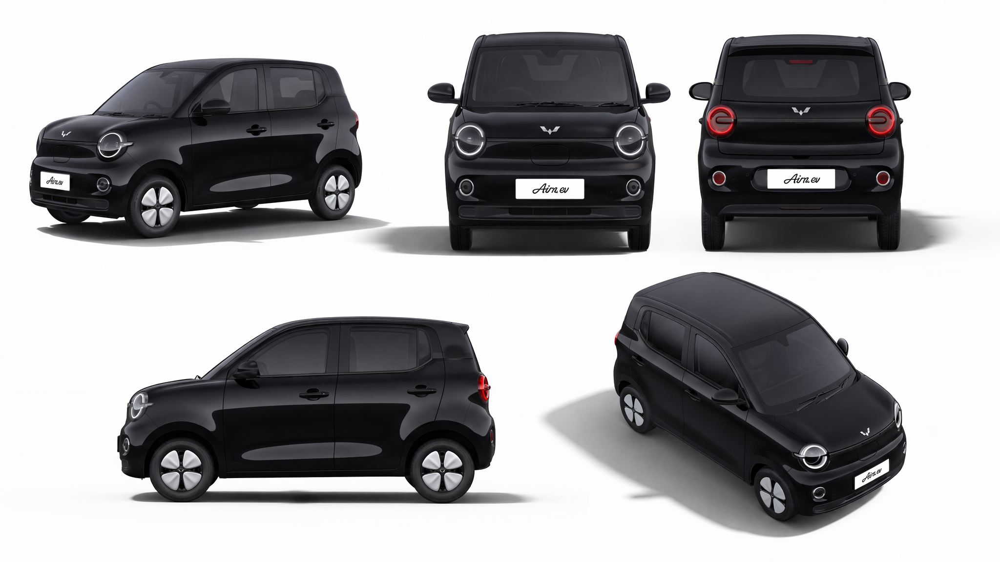

01 / STANDARD
先定义不可改变的车型特征
模型生成前先列出最容易漂移的结构，避免只写“同一辆车”。
- 车身长宽高比例与整体轮廓
- 前脸、尾部和灯组结构
- 车窗、车门分缝、门把手与车顶
- 轮毂样式、轮胎比例与离地高度
- 车漆颜色、玻璃、金属和塑料材质
02 / SINGLE VIEW
单视角车辆资产
适合为某个关键镜头建立清楚、干净的主参考。
单视角车辆资产 Prompt
生成一张高完成度的车辆资产图，主体是一辆【车型名称 / 品牌车型】。严格保留真实车身比例、车头与车尾结构、灯组、车窗比例、轮毂、车门分缝、车顶线条和整体轮廓，不要将车型泛化成普通汽车。 展示角度为【前 45 度 / 纯侧面 / 后 45 度 / 正面 / 正后方 / 顶部】，车辆完整入镜，不裁切车身，不缺失车轮。镜头为人眼或略低机位，50mm-85mm 产品摄影视角，避免超广角畸变。 背景采用纯白、浅灰无缝或极简影棚，地面有自然接地阴影或轻微倒影。使用干净均匀的产品摄影布光，准确表现车漆、玻璃、金属、塑料、轮胎和灯罩材质。高端汽车产品视觉，真实摄影或写实 CG，高分辨率。 不要人物、复杂环境、文字、水印、夸张透视、多车、车身变形、轮毂错误或灯组结构错误。
03 / SIX VIEWS
六视角车辆资产板
用于后续切换机位、制作分镜和检查车型一致性。



六视角车辆资产 Prompt
生成一张高完成度的车辆六视角资产展示板，主体是一辆【车型名称 / 品牌车型】。六个视角分别为：前 45 度、纯侧面、后 45 度、正面、正后方、顶部。 六个视角必须是同一辆车，保持完全一致的车身颜色、比例、轮毂、灯组、车顶、门把手和尾部结构，仅改变观察角度。每个视角完整清楚，不重叠、不裁切、不遮挡。 纯白或浅灰无缝背景，高端汽车产品资产板风格。布光均匀自然，真实表现车漆、玻璃、轮胎、金属饰条和灯罩材质。高分辨率，结构稳定，适合作为后续 AI 生图、视频分镜和设计参考。 不要人物、复杂环境、文字说明、Logo 乱码、水印、错误透视、随机改变轮毂或车身结构。
04 / CHECK
生成后不要只看“像不像”
逐项检查结构是否在不同视角悄悄改变。
身份检查
品牌车型、车身比例与主要轮廓一致。
结构检查
灯组、轮毂、门把手、窗线和车顶没有随机变化。
材质检查
车漆不过油、玻璃不发灰、轮胎与金属反射合理。
生产检查
车身完整、无裁切、无文字乱码，能够作为参考资产继续使用。